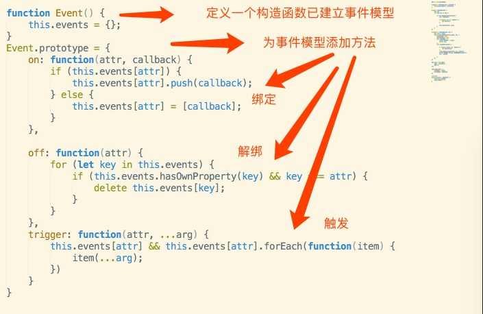

vue核心原理02
动态数据绑定:如何监听其属性的读取与变化？
也就是说，如何知道程序访问了对象的哪个属性，又改变了哪个属性？
问题
如果设置新的值是一个对象的话，新设置的对象的属性是否能能继续响应 getter 和 setter?
let app1 = new Vue({
name: 'youngwind',
age: 25
});
app1.data.name = {
lastName: 'liang',
firstName: 'shaofeng'
};
要实现的结果如下：
app1.data.name.lastName;
// alert '你访问了 lastName '
app1.data.name.firstName = 'lalala';
// alert '你设置了firstName, 新的值为 lalala'
问题
考虑传递回调函数。在实际应用中，当特定数据发生改变的时候，我们是希望做一些特定的事情的，而不是每一次都只能打印出一些信息。所以，我们需要支持传入回调函数的功能。
let app1 = new Vue({
name: 'youngwind',
age: 25
});
// 实现 $watch 这个 API
要实现的结果如下：
app1.$watch('age', function(age) {
alert(`我的年纪变了，现在已经是：${age}岁了`)
});
app1.data.age = 100;
// alert '我的年纪变了，现在已经是100岁了'
原理


js源码
function Event() {
this.events = {};
}
Event.prototype = {
on: function(attr, callback) {
if (this.events[attr]) {
this.events[attr].push(callback);
} else {
this.events[attr] = [callback];
}
},
off: function(attr) {
for (let key in this.events) {
if (this.events.hasOwnProperty(key) && key === attr) {
delete this.events[key];
}
}
},
trigger: function(attr, ...arg) {
this.events[attr] && this.events[attr].forEach(function(item) {
item(...arg);
})
}
}
function Vue(data) {
this.data = data;
this.walk(data);
this.watch = new Event();
}
let p = Vue.prototype;
p.$watch = function(attr, callback) {
this.watch.on(attr, callback);
}
p.walk = function(obj) {
let val;
for (let key in obj) {
if (obj.hasOwnProperty(key)) {
val = obj[key];
if (typeof val === 'object') {
new Vue(val);
}
this.convert(key, val);
}
}
};
p.convert = function(key, val) {
let _this = this;
Object.defineProperty(this.data, key, {
enumerable: true,
configurable: true,
get: function() {
alert('你访问了' + key);
return val;
},
set: function(newVal) {
if (typeof newVal === 'object') {
new Vue(newVal);
}
_this.watch.trigger(key, val, newVal);
alert(`你设置了 ${key}, 新的值为${newVal}`);
val = newVal;
}
})
};
let app1 = new Vue({
name: 'youngwind',
age: 25
});
app1.data.name = {
lastName: 'liang',
firstName: 'shaofeng'
};
jxjweb.top